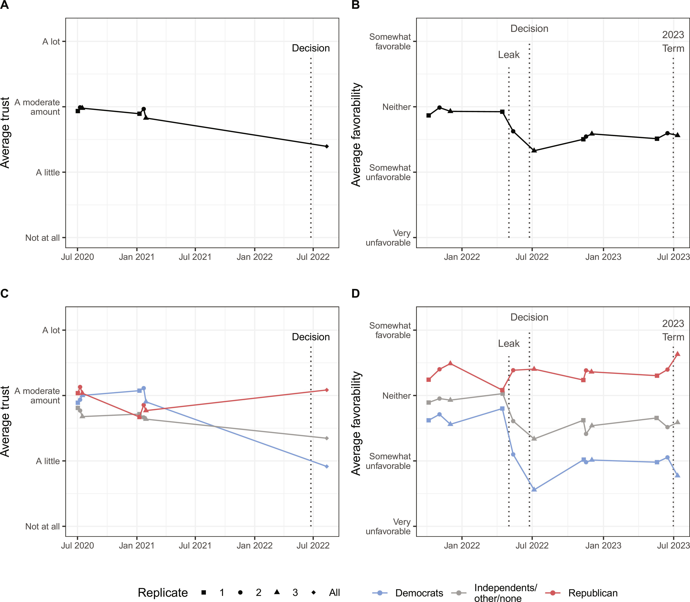
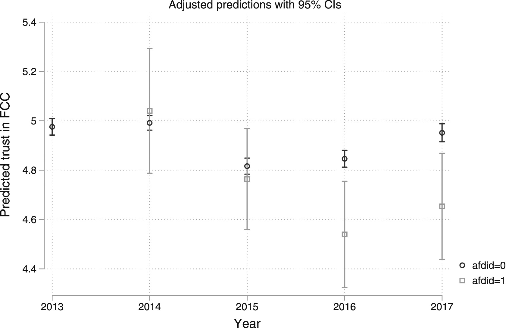
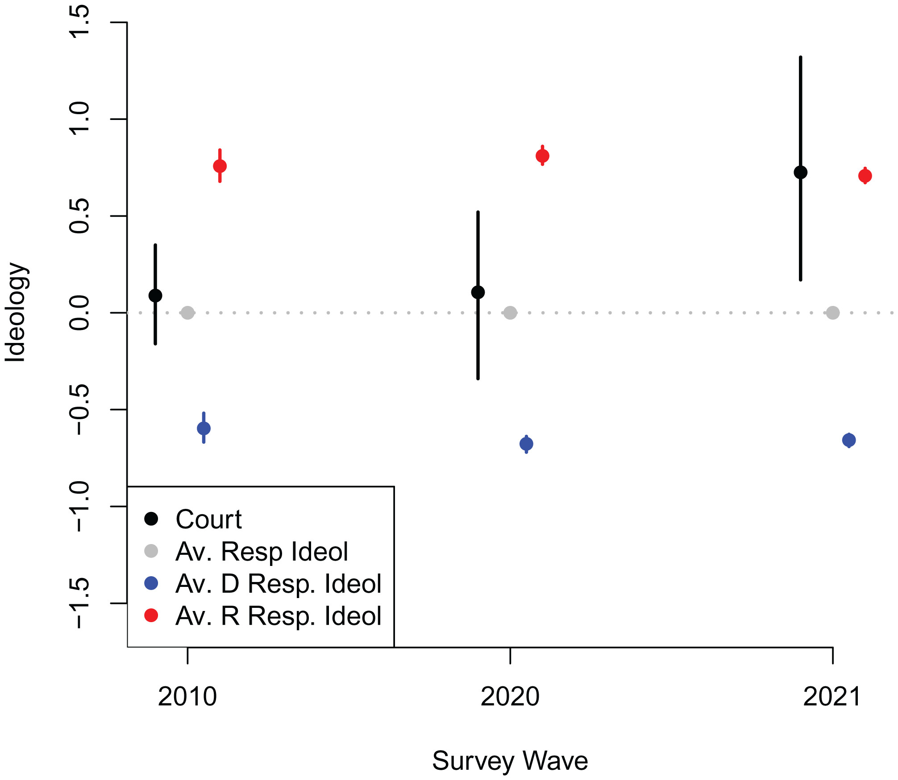
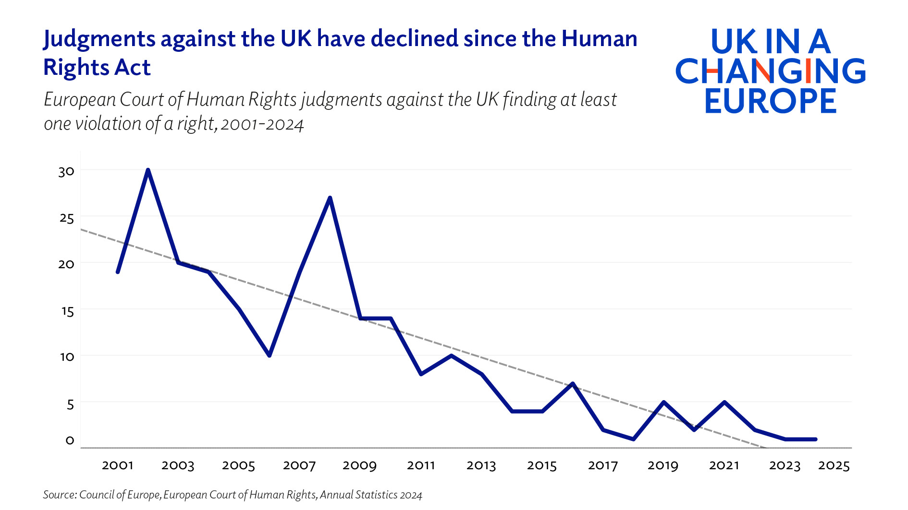

── Attaching core tidyverse packages ──────────────────────── tidyverse 2.0.0 ──
✔ dplyr 1.1.4 ✔ readr 2.1.5
✔ forcats 1.0.0 ✔ stringr 1.5.1
✔ ggplot2 3.5.0 ✔ tibble 3.2.1
✔ lubridate 1.9.3 ✔ tidyr 1.3.1
✔ purrr 1.0.2
── Conflicts ────────────────────────────────────────── tidyverse_conflicts() ──
✖ dplyr::filter() masks stats::filter()
✖ dplyr::lag() masks stats::lag()
ℹ Use the conflicted package (<http://conflicted.r-lib.org/>) to force all conflicts to become errorsLegitimacy, Public Support and Backlash
Week 10
Assessment
before starting writing, make sure to:
read the Assessment page on the website
read the FAQ page on the website
consult slides from week 7
Legitimacy and public support
to what extent are courts immune from changes in public opinion?
is the legitimacy of judicial institutions in decline?
Legitimacy
Legitimacy is a psychological property of an authority, institution, or social arrangement that leads those connected to it to believe that it is appropriate, proper, and just. (Tyler 2006)
sometimes used interchangeably with “authority” and “diffuse support”
- conceptually different from “specific support” (but measurement difficulties)
Judicial legitimacy
unlike democratic parliaments and executives, most courts cannot derive their legitimacy from electoral mandates
at the same time, courts rely on diffuse support for effectiveness more than other branches
particularly important when constituents disagree over a policy decision
Sources of judicial legitimacy
traditionally, belief in legalism and exposure to legal symbols is seen as a major source of judicial legitimacy (Gibson and Nelson 2017; Caldeira and Gibson 1992)
legal symbols make individuals believe that what courts do is fairer and different from politics
more awareness of courts leads to more exposure to its legitimizing symbols and a build up of a “repository of goodwill”
legalistic (compared to partisan) framing of a ruling induces specific support (Magalhães et al. 2023)
Sources of judicial legitimacy
Bartels and Johnston (2013) put forward an ideological explanation for judicial legitimacy
individuals who believe they are in an ideological disagreement with SCOTUS ascribe it lower legitimacy than those who think they are in agreement
individual perceptions of a court’s ideological tenor can be quite variable (lack of awareness, obscured by legalism, etc.)
perceived ideological congruence matters less for people who think courts decide on a case-by-case basis
Sources of judicial legitimacy
seemingly even controversial decisions such as Bush v. Gore did not significantly reduce diffuse support for SCOTUS (Gibson 2024)
… that is until Dobbs (Levendusky et al. 2024)
Support for SCOTUS post-Dobbs

Political foundations
we would expect that individuals holding democratic values are more supportive of judicial independence
a study of 34 African countries shows that presidential co-partisanship decreases support for horizontal judicial power and increases it for vertical (Bartels and Kramon 2020)
- support for courts depends on who is in power
Political context
in line with positivity theory, greater awareness of a court should be associated with more support for its independence (Gibson, Lodge, and Woodson 2014)
Gandur, Chewning, and Driscoll (2025) show that this relationship is affected by the political context
- in Poland and Hungary, the perception of executive influence on courts creates even more demand for judicial independence than in US and Germany, but awareness alone does not
identification with anti-system parties may reduce trust in courts (Arzheimer 2024)
Anti-system parties

Maintaining public support
to maintain diffuse support, it is arguably in courts’ long-term interests to stay ideologically close to the median voter
courts can offer compensation to the “losers” to increase acceptance (Gonzalez-Ocantos and Dinas 2019)
courts might care less about maintaining public support when
they are aligned with the executive (for enforcement)
the public is not paying attention (but see Casillas, Enns, and Wohlfarth (2011))
public opinion is less important (autocracies)
Maintaining public support

Court rulings and public opinion
- court rulings can (de)legitimize a policy (Sternberg, Brouard, and Hönnige 2022)
- they are most effective when the courts are trusted
- media framing affects the degree to which a ruling moves public opinion (Linos and Twist 2016)
Backlash
Backlash against courts
what drives backlash against international courts? (Madsen et al. 2022)
probably the same thing that drives backlash against domestic courts: disagreement with outcomes
populism is at best a partial explanation (Voeten 2020)
individual-level illiberal views about justice are negatively correlated with trust in the EU, ECtHR and domestic judiciaries (Voeten 2022)
Backlash against courts
evidence of greater self-restraint in response to backlash
the ECtHR rules less often against most critical governments (stiansen2018?)
the ECtHR restricted the scope of human rights and increased governments’ margin of appreciation (discretion) (Helfer and Voeten 2020)
Declining UK ECHR violations

References
Arzheimer, Kai. 2024. “Identification with an Anti-System Party Undermines Diffuse Political Support: The Case of Alternative for Germany and Trust in the Federal Constitutional Court.” Party Politics, March, 13540688241237493. https://doi.org/10.1177/13540688241237493.
Bartels, Brandon L., Jeremy Horowitz, and Eric Kramon. 2023. “Can Democratic Principles Protect High Courts from Partisan Backlash? Public Reactions to the Kenyan Supreme Court’s Role in the 2017 Election Crisis.” American Journal of Political Science 67 (3): 790–807. https://doi.org/10.1111/ajps.12666.
Bartels, Brandon L., and Christopher D. Johnston. 2013. “On the Ideological Foundations of Supreme Court Legitimacy in the American Public.” American Journal of Political Science 57 (1): 184–99. https://doi.org/10.1111/j.1540-5907.2012.00616.x.
Bartels, Brandon L., and Eric Kramon. 2020. “Does Public Support for Judicial Power Depend on Who Is in Political Power? Testing a Theory of Partisan Alignment in Africa.” American Political Science Review 114 (1): 144–63. https://doi.org/10.1017/S0003055419000704.
Caldeira, Gregory A., and James L. Gibson. 1992. “The Etiology of Public Support for the Supreme Court.” American Journal of Political Science 36 (3): 635–64. https://doi.org/10.2307/2111585.
Casillas, Christopher J., Peter K. Enns, and Patrick C. Wohlfarth. 2011. “How Public Opinion Constrains the U.S. Supreme Court.” American Journal of Political Science 55 (1): 74–88. https://doi.org/10.1111/j.1540-5907.2010.00485.x.
Cheruvu, Sivaram, Jay N. Krehbiel, and Samantha Mussell. 2025. “Partisanship, Pragmatism, or Idealism? Evaluating Public Support for Backlashes Against International Courts in Backsliding Democracies.” Journal of European Public Policy, February. https://www.tandfonline.com/doi/abs/10.1080/13501763.2024.2351921.
Gandur, Martín, Taylor Kinsley Chewning, and Amanda Driscoll. 2025. “Awareness of Executive Interference and the Demand for Judicial Independence: Evidence from Four Constitutional Courts.” Journal of Law and Courts, January, 1–26. https://doi.org/10.1017/jlc.2024.20.
Gibson, James L. 2024. “Losing Legitimacy: The Challenges of the Dobbs Ruling to Conventional Legitimacy Theory.” American Journal of Political Science 68 (3): 1041–56. https://doi.org/10.1111/ajps.12834.
Gibson, James L., Milton Lodge, and Benjamin Woodson. 2014. “Losing, but Accepting: Legitimacy, Positivity Theory, and the Symbols of Judicial Authority.” Law & Society Review 48 (4): 837–66. https://doi.org/10.1111/lasr.12104.
Gibson, James L., and Michael J. Nelson. 2017. “Reconsidering Positivity Theory: What Roles Do Politicization, Ideological Disagreement, and Legal Realism Play in Shaping U.S. Supreme Court Legitimacy?” Journal of Empirical Legal Studies 14 (3): 592–617. https://doi.org/10.1111/jels.12157.
Gonzalez-Ocantos, Ezequiel, and Elias Dinas. 2019. “Compensation and Compliance: Sources of Public Acceptance of the U.K. Supreme Court’s Brexit Decision.” Law & Society Review 53 (3): 889–919. https://doi.org/10.1111/lasr.12421.
Helfer, Laurence R, and Erik Voeten. 2020. “Walking Back Human Rights in Europe?” European Journal of International Law 31 (3): 797–827. https://doi.org/10.1093/ejil/chaa071.
Jessee, Stephen, Neil Malhotra, and Maya Sen. 2022. “A Decade-Long Longitudinal Survey Shows That the Supreme Court Is Now Much More Conservative Than the Public.” Proceedings of the National Academy of Sciences 119 (24): e2120284119. https://doi.org/10.1073/pnas.2120284119.
Levendusky, Matthew, Shawn PattersonJr, Michele Margolis, Josh Pasek, Kenneth Winneg, and Kathleen H. Jamieson. 2024. “Has the Supreme Court Become Just Another Political Branch? Public Perceptions of Court Approval and Legitimacy in a Post-Dobbs World.” Science Advances, March. https://doi.org/10.1126/sciadv.adk9590.
Linos, Katerina, and Kimberly Twist. 2016. “The Supreme Court, the Media, and Public Opinion: Comparing Experimental and Observational Methods.” The Journal of Legal Studies 45 (2): 223–54. https://doi.org/10.1086/687365.
Madsen, Mikael Rask, Juan A. Mayoral, Anton Strezhnev, and Erik Voeten. 2022. “Sovereignty, Substance, and Public Support for European Courts’ Human Rights Rulings.” American Political Science Review 116 (2): 419–38. https://doi.org/10.1017/S0003055421001143.
Magalhães, Pedro C., Jon K. Skiple, Miguel M. Pereira, Sveinung Arnesen, and Henrik L. Bentsen. 2023. “Beyond the Myth of Legality? Framing Effects and Public Reactions to High Court Decisions in Europe.” Comparative Political Studies 56 (10): 1537–66. https://doi.org/10.1177/00104140231152769.
Sternberg, Sebastian, Sylvain Brouard, and Christoph Hönnige. 2022. “The Legitimacy-Conferring Capacity of Constitutional Courts: Evidence from a Comparative Survey Experiment.” European Journal of Political Research 61 (4): 973–96. https://doi.org/10.1111/1475-6765.12480.
Tyler, Tom R. 2006. “Psychological Perspectives on Legitimacy and Legitimation.” Annual Review of Psychology 57 (1): 375–400. https://doi.org/10.1146/annurev.psych.57.102904.190038.
Voeten, Erik. 2020. “Populism and Backlashes Against International Courts.” Perspectives on Politics 18 (2): 407–22. https://doi.org/10.1017/S1537592719000975.
———. 2022. “Is the Public Backlash Against Globalization a Backlash Against Legalization and Judicialization?” International Studies Review 24 (2): viac015. https://doi.org/10.1093/isr/viac015.